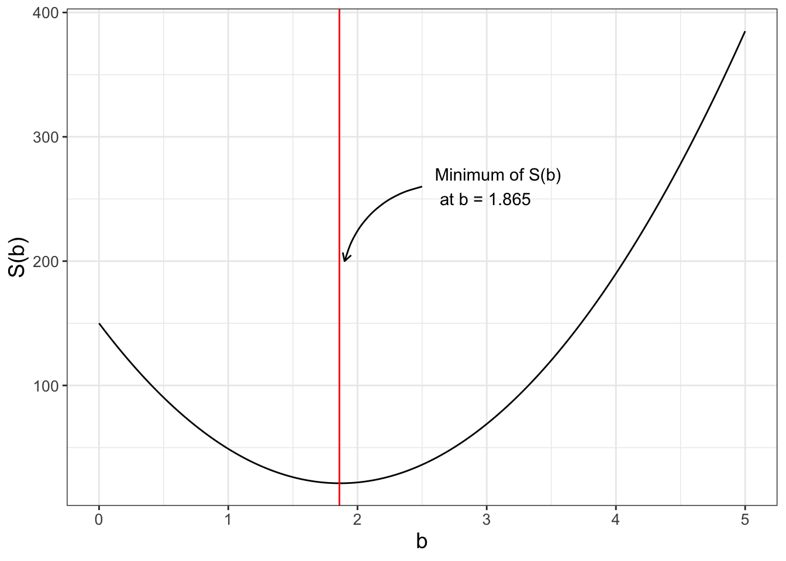
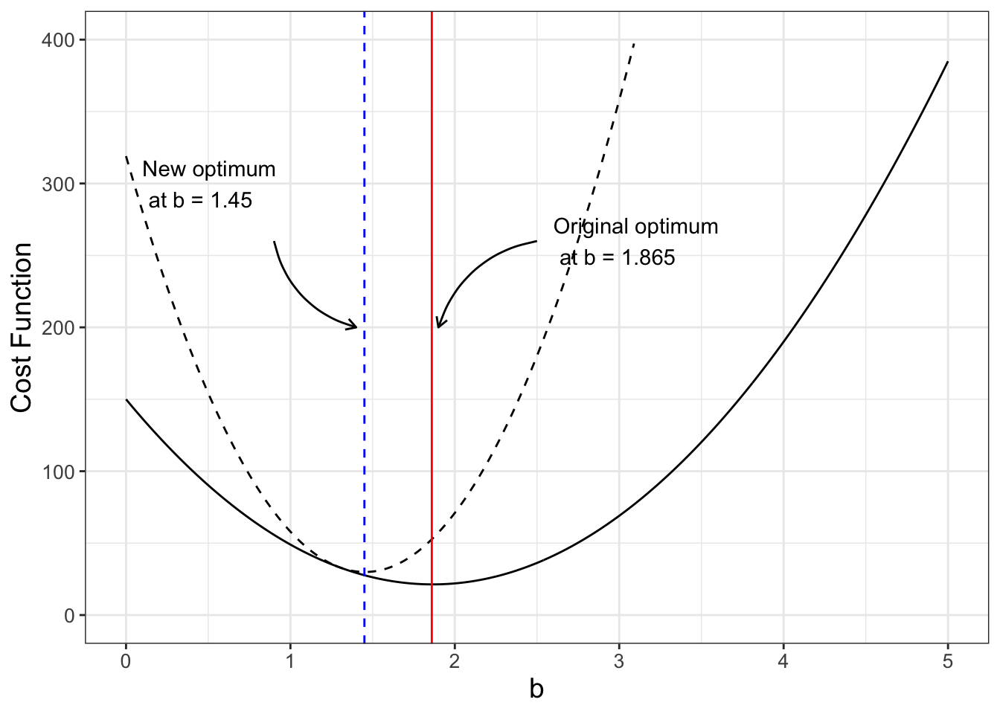
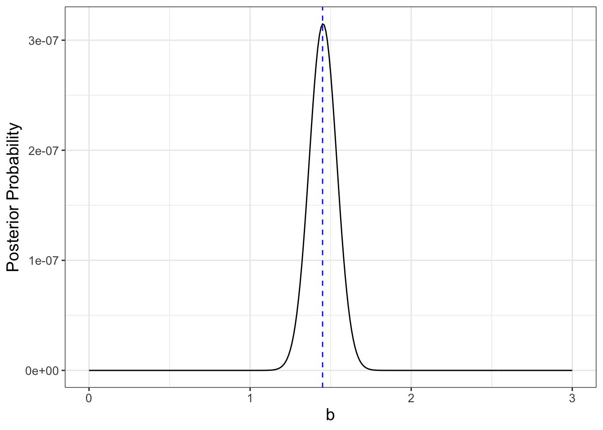

10 Cost Functions and Bayes’ Rule
Chapter 9 introduced likelihood functions as an approach to tackle parameter estimation. However this is not the only approach to understand model-data fusion. This chapter introduces cost functions, which estimates parameters from data using a least squares approach. Want to know a secret? Cost functions are very closely related to log-likelihood functions. This chapter will explore this idea some more, first by exploring model-data residuals, defining a cost function, and then connecting them back to likelihood functions. To complete the circle, this chapter ends by discussing Bayes’ Rule, which will further strengthen the connection between cost and likelihood functions. Let’s get started!
10.1 Cost functions and model-data residuals
Let’s revisit the linear regression problem from Chapter 9. Recall Table 9.1 from Chapter 9. With these data we wanted to fit a function of the form \(y=bx\) (forcing the intercept term to be zero). We will extend Table 9.1 to include the model-data residual computed as \(y-bx\) in Table 10.1:
| \(x\) | \(y\) | \(bx\) | \(y-bx\) | \(b=1\) | \(b=3\) | \(b=-1\) |
|---|---|---|---|---|---|---|
| 1 | 3 | \(b\) | \(3-b\) | 2 | 0 | 4 |
| 2 | 5 | \(2b\) | \(5-2b\) | 3 | -1 | 7 |
| 4 | 4 | \(4b\) | \(4-4b\) | 0 | -8 | 8 |
| 4 | 10 | \(4b\) | \(10-4b\) | 6 | -2 | 14 |
Also included in Table 10.1 are the model-data residual values for different values of \(b\). Notably values of the residuals can be negative and some can be positive - which makes it tricky to assess the “best” value of \(b\) from the residuals alone. (If we found a value of \(b\) where the residuals were all zero, then we would have the “best” value of \(b\)!1).
To assess the overall residuals as a function of the value of \(b\), we need to take into consideration not just the value of the residual (positive or negative), but rather some way to measure the overall distance of all the residuals from a given value of \(b\). One way to define that is with a function that squares each residual (so that negative and positive values don’t cancel each other) and adds each of those results together. We call this the sum squared residuals. So for example, the sum squared residual when \(b=1\) is shown in Equation 10.1:
\[ \mbox{ Sum square residual: } 2^{2}+3^{2}+0^{2}+6^{2} = 49 \tag{10.1}\]
The other square residuals are \(68\) when \(b=3\) and \(325\) when \(b=-1\). So of these choices for \(b\), the one that minimizes the square residual is \(b=1\).
Let’s generalize this to determine a function to compute the sum square residual for any value of \(b\). This function, denoted as \(S(b)\), is called the cost function (Equation 10.2):
\[ S(b)=(3-b)^2+(5-2b)^2+(4-4b)^2+(10-4b)^2 \tag{10.2}\]
Equation 10.2 is a function of one variable (\(b\)). Figure 10.1 shows a graph of \(S(b)\). Notice how the plot of \(S(b)\) is a nice quadratic function, with a minimum at \(b=1.865\). Did you notice that this value for \(b\) is the same value for the minimum that we found from Equation 9.6 in Chapter 9? In Exercise @ref(exr:cost-min-10) you will use calculus to determine the optimum value of \(S(b)\).
10.1.1 Accounting for uncertainty
The cost function can also incorporate uncertainty in the value of the response variable \(y\). We will define this uncertainty as \(\sigma\) and have it be the same for each value \(y_{i}\). In some cases the uncertainty may vary from measurement to measurement - but the concepts presented here can generalize. To account for this uncertainty we divide each of the square residuals in Equation 10.2 by \(\sigma^{2}\), as shown in Equation 10.3 using \(\sum\) notation.
\[ S(\vec{\alpha}) = \sum_{i=1}^{N} \frac{(y_{i}-f(x,\vec{\alpha}))^{2}}{\sigma^{2}} \tag{10.3}\]
As an example, comparing Equation 10.2 to Equation 10.3 we have \(N=4\), \(f(x_{i},\vec{\alpha} ) =bx\), and \(\sigma = 1\).2
10.1.2 Comparing cost and log-likelihood functions
Chapter 9 defined the log-likelihood function (Equation 9.7), which for the small dataset we are studying is represented with Equation 10.4 where \(\sigma = 1\) and \(N=4\):
\[ \begin{split} \ln(L(b | \vec{x},\vec{y} )) &= -2 \ln(2) - 2 \ln (\pi) - 2 \ln(1) -\frac{(3-b)^{2}}{2}-\frac{(5-2b)^{2}}{2} \\ &-\frac{(4-4b)^{2}}{2}-\frac{(10-4b)^{2}}{2} \\ &= -2 \ln(2) - 2 \ln (\pi) -\frac{(3-b)^{2}}{2}-\frac{(5-2b)^{2}}{2} \\ & -\frac{(4-4b)^{2}}{2}-\frac{(10-4b)^{2}}{2} \end{split} \tag{10.4}\]
(Note that in Equation 10.4 the expression \(-2 \ln(1)\) is 0.) If we compare Equation 10.4 with Equation 10.2, then we have \(\ln(L(b | \vec{x},\vec{y} )) = -2 \ln(2) - 2 \ln (\pi) - \frac{1}{2} \cdot S(b)\). This is no coincidence: log-likelihood functions are similar to cost functions! While Equation 10.4 contains some extra factors, they only shift vertically or expand the graph of \(\ln(L(b | \vec{x},\vec{y} ))\) compared to \(S(b)\). This “coincidence” is only true when \(\sigma\) is the same for all \(y_{i}\). Can you explain why?
For both log-likelihood or cost functions the goal is optimization. Vertically shifting or expanding a function does not change the location of an optimum value (Why? Think back to derivatives from Calculus I). In fact, a quadratic cost function yields the same results as the log-likelihood function assuming the residuals are normally distributed.
10.2 Further extensions to the cost function
The cost function \(S(b)\) can be extended additionally to incorporate other types of data. For example, if we knew there was a given range of values that would make sense (say \(b\) is near 1.3 with a standard deviation of 0.1), we should be able to incorporate this information into the cost function. We do this by adding an additional term to Equation 10.2 (\(\tilde{S}(b)\), Equation 10.5, also is graphed in Figure 10.2).
\[ \tilde{S}(b)=(3-b)^2+(5-2b)^2+(4-4b)^2+(10-4b)^2 + \frac{(b-1.3)^2}{0.1^2} \tag{10.5}\]

Aha! Figure 10.2 shows how the revised cost function \(\tilde{S}(b)\) changes the optimum value. Numerically this works out to be \(\tilde{b}=\) 1.45. In Exercise @ref(exr:cost-min-10) you will verify this new minimum value and compare the results to the fitted value of \(b=1.86\).
Adding this prior information seems like an effective approach. Many times a study wants to build upon the existing body of literature and to take that into account. This approach of including prior information into the cost function can also be considered a Bayesian approach.
10.3 Conditional probabilities and Bayes’ rule
We first need to understand Bayes’ rule and conditional probability, with an example.
Example 10.1 The following table shows results from a survey of people’s views on the economy (optimistic or pessimistic) and whether or not they voted for the incumbent President in the last election. Percentages are reported as decimals. Probability tables are a clever way to organize this information.
| Probability | Optimistic | Pessimistic | Total |
|---|---|---|---|
| Voted for the incumbent President | 0.20 | 0.20 | 0.40 |
| Did not vote for incumbent President | 0.15 | 0.45 | 0.60 |
| Total | 0.35 | 0.65 | 1.00 |
Compute the probability of having an optimistic view on the economy.
Based on the probability table, we define the following probabilities:
- The probability you voted for the incumbent President and have an optimistic view on the economy is 0.20
- The probability you did not vote for the incumbent President and have an optimistic view on the economy is 0.15
- The probability you voted for the incumbent President and have an pessimistic view on the economy is 0.20
- The probability you did not vote for the incumbent President and have an pessimistic view on the economy is 0.45
We calculate the probability of having an optimistic view on the economy by adding the probabilities with an optimistic view, whether or not they voted for the incumbent President. For this example, this probability sums to 0.20 + 0.15 = 0.35, or 35%.
On the other hand, the probability you have a pessimistic view on the economy is 0.20 + 0.45 = 0.65, or 65%. Notice how the two of these together (probability of optimistic and pessimistic views of the economy is 1, or 100% of the outcomes.)
10.3.1 Conditional probabilities
Next, let’s discuss conditional probabilities. A conditional probability is the probability of an outcome given some previous outcome, or \(\mbox{Pr} (A | B)\), where Pr means “probability of an outcome” and \(A\) and \(B\) are two different outcomes or events. In probability theory you might study the following law of conditional probability:
\[ \begin{split} \mbox{Pr}(A \mbox { and } B) &= \mbox{Pr} (A \mbox{ given } B) \cdot \mbox{Pr}(B) \\ &= \mbox{Pr} (A | B) \cdot \mbox{Pr}(B) \\ &= \mbox{Pr} (B | A) \cdot \mbox{Pr}(A) \end{split} \tag{10.6}\]
Typically when expressing conditional probabilities we remove “and” and write \(P(A \mbox{ and } B)\) as \(P(AB)\) and “given” as \(P(A \mbox{ given } B)\) as \(P(A|B)\).
Example 10.2 Continuing with Example 10.1, sometimes people believe that your views of the economy influence whether you are going to vote for the incumbent President in an election. Use the information from the table in Example 10.1 to compute the probability you voted for the incumbent President given you have an optimistic view of the economy.
Solution 10.1. To compute the probability you voted for the incumbent President given you have an optimistic view of the economy is a rearrangement of Equation 10.6:
\[ \begin{split} \mbox{Pr(Voted for incumbent President | Optimistic View on Economy)} = \\ \frac{\mbox{Pr(Voted for incumbent President and Optimistic View on Economy)}}{\mbox{Pr(Optimistic View on Economy)}} = \\ \frac{0.20}{0.35} = 0.57 \end{split} \tag{10.7}\]
So if you have an optimistic view on the economy, there is a 57% chance you will vote for the incumbent President. Contrast this result to the probability that you voted for the incumbent President (Example 10.1), which is only 40%. Perhaps your view of the economy does indeed influence whether or not you would vote to re-elect the incumbent President.
10.3.2 Bayes’ rule
Using the incumbent President and economy example as a framework, we will introduce Bayes’ Rule, which is a re-arrangment of the rule for conditional probability:
\[ \mbox{Pr} (A | B) = \frac{ \mbox{Pr} (B | A) \cdot \mbox{Pr}(A)}{\mbox{Pr}(B) } \tag{10.8}\]
It turns out Bayes’ Rule is a really helpful way to understand how we can systematically incorporate this prior information into the likelihood function (and by association the cost function). For parameter estimation our goal is to estimate parameters, given the data. Another way to state Bayes’ Rule in Equation 10.8 is using terms of parameters and data:
\[ \mbox{Pr}( \mbox{ parameters } | \mbox{ data }) = \frac{\mbox{Pr}( \mbox{ data } | \mbox{ parameters }) \cdot \mbox{ Pr}( \mbox{ parameters }) }{\mbox{Pr}(\mbox{ data }) } \tag{10.9}\]
While Equation 10.9 seems pretty conceptual, here are some key highlights:
- In practice, the term \(\mbox{Pr}( \mbox{ data } | \mbox{ parameters })\) in Equation 10.9 is the likelihood function (Equation 9.5).
- The term \(\mbox{Pr}( \mbox{ parameters })\) is the probability distribution of the prior information on the parameters, specifying the probability distribution functions for the given context. When this distribution is the same as \(\mbox{Pr}( \mbox{ data } | \mbox{ parameters })\) (typically normally distributed), prior information has a multiplicative effect on the likelihood function (\(\mbox{Pr}( \mbox{ parameters } | \mbox{ data })\)). (Or an additive effect on the log-likelihood function.) This is good news! When we added that additional term for prior information into \(\tilde{S}(b)\) in Equation 10.5, we accounted for the prior information correctly. In Exercise @ref(exr:log-cost-verify) you will explore how the log-likelihood is related to the cost function.
- The expression \(\mbox{Pr}( \mbox{ parameters } | \mbox{ data })\) is the start of a framework for a probability density function, which should integrate to unity. (You will explore this more if you study probability theory.) This denominator term is called a normalizing constant. Since our overall goal is to select parameters that optimize \(\mbox{Pr}( \mbox{ parameters } | \mbox{ data })\), the expression in the denominator (\(\mbox{Pr}(\mbox{ data })\) ) does not change the location of the optimum values.
10.4 Bayes’ rule in action
Wow - we made some significant progress in our conceptual understanding of how to incorporate models and data! Let’s see how this applies to our linear regression problem (\(y=bx\)). We have the following assumptions:
- Assumption 1: The data are independent, identically distributed. We can then write the likelihood function as the following:
\[ \mbox{Pr}(\vec{y} | b) = \left( \frac{1}{\sqrt{2 \pi} \sigma}\right)^{4} e^{-\frac{(3-b)^{2}}{2\sigma^{2}}} \cdot e^{-\frac{(5-2b)^{2}}{2\sigma^{2}}} \cdot e^{-\frac{(4-4b)^{2}}{2\sigma^{2}}} \cdot e^{-\frac{(10-4b)^{2}}{2\sigma^{2}}} \]
- Assumption 2: Prior knowledge expects us to say that \(b\) is normally distributed with mean 1.3 and standard deviation 0.1. Incorporating this information allows us to write the following:
\[ \mbox{Pr}(b) =\frac{1}{\sqrt{2 \pi} \cdot 0.1} e^{-\frac{(b-1.3)^{2}}{2 \cdot 0.1^{2}}} \]
When we combine the two pieces of information, the probability of \(b\), given the data \(\vec{y}\), is the following:
\[ \mbox{Pr}(b | \vec{y}) \approx e^{-\frac{(3-b)^{2}}{2\sigma^{2}}} \cdot e^{-\frac{(5-2b)^{2}}{2\sigma^{2}}} \cdot e^{-\frac{(4-4b)^{2}}{2\sigma^{2}}} \cdot e^{-\frac{(10-4b)^{2}}{2\sigma^{2}}} \cdot e^{-\frac{(b-1.3)^{2}}{2 \cdot 0.1^{2}}} \tag{10.10}\]
Notice we are ignoring the terms \(\displaystyle \left( \frac{1}{\sqrt{2 \pi} \cdot \sigma }\right)^{4}\) and \(\displaystyle \frac{1}{\sqrt{2 \pi} \cdot 0.1}\), because per our discussion above not including them does not change the location of the optimum value, only the value of the likelihood function. The plot of \(\mbox{Pr}(b | \vec{y})\), assuming \(\sigma = 1\) is shown in Figure 10.3:

It looks like the value that optimizes our posterior probability is \(b=\) 1.45. This is similar the value of \(\tilde{b}\) from Equation 10.5. Again, this is no coincidence. Adding in prior information to the cost function or using Bayes’ Rule are equivalent approaches.
10.5 Next steps
Now that we have seen the usefulness of cost functions and Bayes’ Rule we can begin to apply this to larger problems involving more equations and data. In order to do that we need to explore some computational methods to scale this problem up - which we will do in subsequent chapters.
10.6 Exercises
Exercise 10.1 The following problem works with Table 9.1 to determine the value of \(b\) with the function \(y=bx\) as in this chapter.
- Using calculus, show that the cost function \(S(b)=(3-b)^2+(5-2b)^2+(4-4b)^2+(10-4b)^2\) has a minimum value at \(b=1.865\).
- What is the value of \(S(1.865)\)?
- Use a similar approach to determine the minimum of the revised cost function \(\tilde{S}(b)=(3-b)^2+(5-2b)^2+(4-4b)^2+(10-4b)^2 + (b-1.3)^2\). Call this value \(\tilde{b}\).
- How do the values of \(S(1.865)\) and \(\tilde{S}(\tilde{b})\) compare?
- Make a plot of the cost functions \(S(b)\) and \(\tilde{S}(b)\) to verify the optimum values.
- Make a scatter plot with the data and the function \(y=bx\) and \(y=\tilde{b}x\). How do the two estimates compare with the data?
Exercise 10.2 Use calculus to determine the optimum value of \(b\) for Equation 10.4. Do you obtain the same value of \(b\) for Equation 10.2?
Exercise 10.3 (Inspired from Berg (2011)) Consider the nutrient equation \(\displaystyle y = c x^{1/\theta}\) using the dataset phosphorous.
- Write down a formula for the objective function \(S(c,\theta)\) that characterizes this equation (that includes the dataset
phosphorous). - Fix \(c=1.737\). Make a
ggplotof \(S(1.737,\theta)\) for \(1 \leq \theta \leq 10\). - How many critical points does this function have over this interval? Which value of \(\theta\) is the global minimum?
Exercise 10.4 Use the cost function \(S(1.737,\theta)\) from Exercise 10.3 to answer the following questions:
- Researchers believe that \(\theta \approx 7\). One way to do this is to include an additional term of \((\theta-7)^{2}\) in the cost function. Re-write your formula from Exercise 10.3b \(S(1.737,\theta)\) to account for this additional (prior) information. Call this revised function \(S_{b}(1.737,\theta)\)
- Make a graph of \(S_{b}(1.737,\theta)\) and determine where the global optimum value occurs.
- How does the inclusion of this additional information change the shape of the cost function and the location of the global minimum, compared to \(S(1.737,\theta)\)?
- Finally, reconsider the fact that \(\theta \approx 7 \pm .5\) (as prior information). To account for this in your cost function, the additional term in \(S_{b}(1.737,\theta)\) could be modified to \(\displaystyle \frac{ (\theta-7)^{2}}{0.5^{2}}\). How does that additional modification change \(S_{b}(1.737,\theta)\) further and the location of the global minimum?
- Let’s say researchers believe \(\theta \approx \mu \pm \sigma\). What would be a general expression to include in the original cost function \(S(1.737,\theta)\) to account for this information? Your final expression will have \(\mu\) and \(\sigma\) in it.
- Use desmos or other graphic software to investigate what would happen in your general expression as \(\mu\) and \(\sigma\). First set \(\sigma=0.5\) and let \(\mu=7\) be a slider. Investigate values of \(\mu\) between 3 and 10 and report what happens. Next set \(\mu=7\) and let \(\sigma = 0.5\) be a slider. Investigate values of \(\sigma\) between 0.1 and 1 and report what happens.
Exercise 10.5 One way to generalize the notion of prior information using cost functions is to include a term that represents the degree of uncertainty in the prior information, such as \(\sigma\). For the problem \(y=bx\) this leads to the following cost function: \(\displaystyle \tilde{S}_{revised}(b)=(3-b)^2+(5-2b)^2+(4-4b)^2+(10-4b)^2 + \frac{(b-1.3)^2}{\sigma^{2}}\).
Use calculus to determine the optimum value for \(\tilde{S}_{revised}(b)\), expressed in terms of \(\tilde{b}_{revised} = f(\sigma)\) (your optimum value will be a function of \(\sigma\)). What happens to \(\tilde{b}_{revised}\) as \(\sigma \rightarrow \infty\)?
Exercise 10.6 For this problem you will minimize some generic functions.
- Using calculus, verify that the optimum value of \(y=ax^{2}+bx+c\) occurs at \(\displaystyle x=-\frac{b}{2a}\). (You can assume \(a>0\).)
- Using calculus, verify that a critical point of \(z=e^{-(ax^{2}+bx+c)^{2}}\) also occurs at \(\displaystyle x=-\frac{b}{2a}\). Note: this is a good exercise to practice your differentiation skills!
- Algebraically show that \(\ln(z) = -y\).
- Explain why \(y\) is similar to a cost function \(S(b)\) and \(z\) is similar to a likelihood function.
Exercise 10.7 This problem continues the re-election of the incumbent President and viewpoint on the economy in Example 10.1. Determine the following conditional probabilities:
- Determine the probability that you voted for the incumbent President given that you have a pessimistic view on the economy.
- Determine the probability that you did not vote for the incumbent President given that you have an pessimistic view on the economy.
- Determine the probability that you did not vote for the incumbent President given that you have an optimistic view on the economy.
- Determine the probability that you have an pessimistic view on the economy given that you voted for the incumbent President.
- Determine the probability that you have an optimistic view on the economy given that you did not vote for the incumbent President.
Exercise 10.8 Incumbents have an advantage in re-election due to wider name recognition, which may boost their re-election chances, as shown in the following table:
| Probability | Being elected | Not being elected | Total |
|---|---|---|---|
| Having name recognition | 0.55 | 0.25 | 0.80 |
| Not having name recognition | 0.05 | 0.15 | 0.20 |
| Total | 0.60 | 0.40 | 1.00 |
Use Bayes’ Rule to determine the probability of being elected, given that you have name recognition.
Exercise 10.9 Demonstrate how Bayes’ Rule differs from the law of conditional probability.
Berg, Hugo van den. 2011. Mathematical Models of Biological Systems. Oxford, New York: Oxford University Press.
To be fair, that means the data would be perfectly on a line; not too interesting of a problem, right?↩︎
Equation 10.3 could be considered a form of weighted linear regression as explored in Chapter 8.↩︎